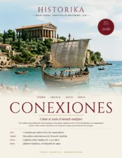
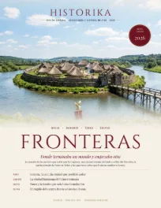
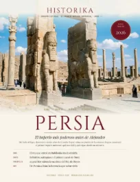
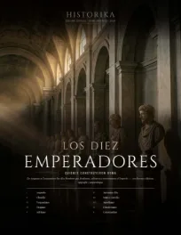
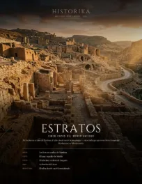
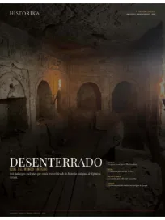
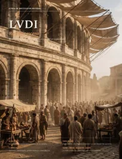
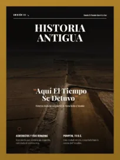
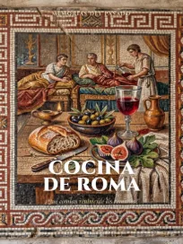

Pompeya · Los talismanes del último día
16 páginas
Guardianes · Rostros contra el mal
16 páginas
Hititas · La voz de la arcilla
16 páginas
Conexiones 2026
16 páginas
Fronteras 2026
16 páginas
Persia · El Imperio Aqueménida
16 páginasHallazgos 2026
14 páginas
Los diez emperadores
24 páginas
Dossier Arqueológico e Histórico 2026
15 páginas
Estratos 2026
13 páginas
Ecos del Mundo Antiguo
15 páginas
Chronica Mundi · Edición especial
10 páginas
Roma Imperial
24 páginas
LVDI · Roma en escena
15 páginas
Historia Antigua · Edición III
11 páginas
Cocina de Roma · Edición II
48 páginas